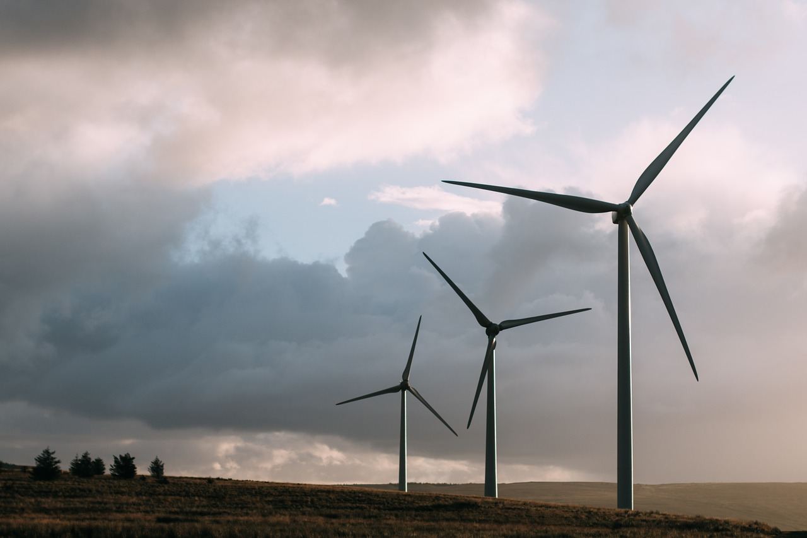
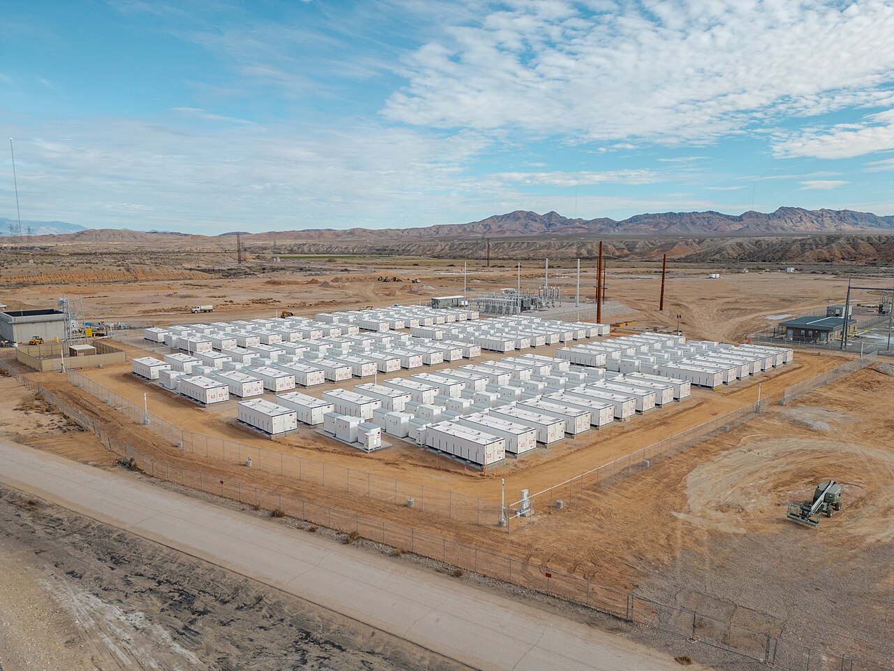

Portal edukacyjny o odnawialnych źródłach energii
Zależność od pogody

Produkcja z fotowoltaiki zmienia się wraz z nasłonecznieniem, a z turbin wiatrowych wraz z prędkością wiatru. Fotowoltaika nie produkuje prądu nocą. Elektrownie wodne zależą od ilości dostępnej wody.
Bilansowanie i magazynowanie energii

Produkcja prądu musi być dostosowana do zapotrzebowania odbiorców. Zmienna praca części OZE wymaga odpowiedniej sieci, elastycznych źródeł, magazynów energii lub regulacji zużycia.
Koszt budowy i przyłączenia
Instalacje wymagają zakupu urządzeń, przygotowania miejsca, montażu i często przyłączenia do sieci. W przypadku geotermii dodatkowym kosztem są odwierty i rozpoznanie zasobów.
Wpływ na środowisko
- Elektrownie wiatrowe: mogą oddziaływać na krajobraz, mieszkańców, ptaki i nietoperze.
- Elektrownie wodne: zapory zmieniają warunki w rzece i mogą utrudniać migrację ryb.
- Fotowoltaika: produkcja paneli wymaga surowców, a zużyte urządzenia muszą zostać zagospodarowane.
- Biomasa: jej spalanie powoduje emisje, a pozyskanie surowca może wpływać na lasy i grunty.
Ograniczenia lokalizacyjne
Nie każdy rodzaj OZE można zastosować w dowolnym miejscu. Geotermia wymaga odpowiednich zasobów podziemnych, energetyka wodna odpowiednich warunków wodnych, a biogazownia regularnych dostaw surowca.